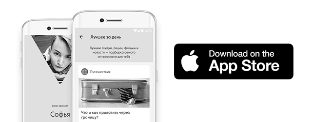

26.07.2017
ПАО «ВымпелКом» (бренд «Билайн») выступает генеральным партнером крупных событий в мире актуальной музыки и искусства двух столиц – фестиваля Present Perfect в Санкт-Петербурге и выставки FACES&LACES в Москве. Благодаря платформе VEON гости мероприятий не упустят ни одного момента программы, займут места с лучшим видом на главные сцены и получат дополнительные яркие впечатления и бонусы.
«Фестивали стали той формой коммуникаций, которая объединяет тысячи людей со схожими интересами в едином пространстве. Вместе с тем, каждый приходит на фестиваль за чем-то своим ─ услышать любимого исполнителя или увидеть работы художника, не отстать от трендов или просто отдохнуть. Так VEON объединяет пользователей с их потребностью в общении, при этом способен учитывать вкусы и предпочтения каждого. Мы рады представить VEON на этих близких по духу событиях как информационный канал и ключ к привилегиям для гостей», ─ говорит Джордж Хелд, вице-президент по развитию цифрового и нового бизнеса ПАО «ВымпелКом» (бренд «Билайн»).
Международный фестиваль электронной музыки и современного искусства Present Perfect пройдет в Санкт-Петербурге с 28 по 30 июля. Программа включает концерт-открытие, образовательные сессии и главное событие ─ 20-ти часовое выступление более 40 электронных музыкантов со всего мира в Музее стрит-арта. Пространство VEON SPACE в центре событий создано для идеального отдыха на фестивале: лучший вид на главную сцену с террасы второго этажа, магазин со всем необходимым в ходе музыкального марафона, зарядные станции для смартфонов и капсульный отель, в котором можно будет отдохнуть между сетами. На фестивале также разместится кинотеатр под открытым небом, организованный совместно с командой BEAT FILM FESTIVAL – лучшей в области документального кино о новой культуре. Смотреть кино в VEON CINEMA можно будет в уютных вигвамах, снабженных беспроводными наушниками. А участникам скейтерского контеста в рамках фестиваля предстоит соревноваться в специальной дисциплине VEON.
Полная информация о происходящем на Present Perfect будет доступна в именном канале фестиваля в приложении VEON. Здесь же все неравнодушные к электронной музыке найдут онлайн-трансляцию образовательных сессий, которые состоятся накануне, 28 июля, с участием профессионалов мировой и российской индустрии.
Выставка FACES&LACES пройдет в Москве с 12 по 13 августа и займет все свободные пространства Парка Горького. На масштабных конструкциях галереи VEON посетители увидят работы актуальных граффити райтеров и представителей альтернативного современного искусства, а музыкальная часть в этом году обещает быть одной из самых важных составляющих мероприятия.
Подписавшись на канал FACES&LACES в VEON, посетители смогут быть в курсе всех событий художественной и музыкальной программы. Для пользователей приложения предусмотрены: лучший вид на главную сцену с открытых террас VEON, зоны, объединяющие искусство и технологии, яркие сувениры и самая актуальная информация о выставке в режиме онлайн.
Платформа VEON позволяет звонить, писать сообщения, обмениваться фото и видео, быть в курсе всех интересных событий, получать бесплатный легальный контент, подобранный под интересы пользователя, а также специальные предложения – уникальные скидки и бонусы от популярных брендов. Для клиентов «Билайн» в приложении доступны функции личного кабинета, а трафик внутри приложения не тарифицируется. Приложение можно скачать бесплатно в App Store и Google Play.
Смотреть видео
Читать далее
20.07.2017

Платформа для общения, развлечений и всего, что вы любите делать в интернете теперь доступна для iOS.
Группа компаний VEON Ltd., работающая в России под брендом «Билайн», открывает VEON для пользователей iOS. VEON объединяет в себе функции мультимедиа-сервиса, платформы для общения и маркетплейса с партнерскими предложениями, акциями и скидками. Пользователям VEON будет доступен развлекательно-новостной контент, а также товары и услуги, которые будут максимально соответствовать их интересам благодаря предиктивной модели, построенной на основе поведения пользователей VEON в приложении.
VEON стал доступен всем владельцам смартфонов на Android 19 июля, а сегодня, 20 июля у обладателей iPhone появилась возможность скачать VEON. Для клиентов «Билайн» весь трафик внутри VEON не тарифицируется.
Приложение VEON уже доступно для бесплатного скачивания в App Store и Google Play. За установку VEON пользователи дополнительно получат эксклюзивные предложения и скидки от российских партнеров VEON.
Читать далее
19.07.2017
«Билайн» представляет россиянам VEON, платформу для общения, развлечений и всего, что вы любите делать в интернете
19 июля 2017 года, Москва. Группа компаний VEON Ltd., работающая в России под брендом «Билайн», представляет VEON, который объединяет в себе функции мультимедиа-сервиса, платформы для общения и маркетплейса с партнерскими предложениями, акциями и скидками. Пользователям VEON будет доступен развлекательно-новостной контент, а также товары и услуги, которые будут максимально соответствовать их интересам благодаря предиктивной модели, построенной на основе поведения пользователей VEON в приложении. VEON доступен всем владельцам смартфонов на Android и будет доступен на iOS в России, а для клиентов «Билайна» весь трафик внутри VEON не тарифицируется.
«VEON - это платформа, сочетающая в себе удобство телекоммуникационных услуг и многообразие развлечений и общения в мире digital. Это очередной шаг в развитии концепции мобильности, уже сегодня открывающий россиянам новый пользовательский опыт в Интернете. При этом, как и любая другая цифровая платформа, VEON будет непрерывно развиваться, становиться еще лучше, проще и удобнее для каждого своего пользователя», - отметил Шелль Мортен Йонсен, Генеральный директор ПАО «ВымпелКом».
Приложение VEON уже доступно для бесплатного скачивания в Google Play и скоро появится в App Store. За установку VEON пользователи дополнительно получат эксклюзивные предложения и скидки от российских партнеров VEON.
VEON работает на основе единой уникальной онлайн-платформы, разработанной телекоммуникационно-технологической компанией VEON Ltd. (ранее Vimpelcom Ltd.). Для российских пользователей наполнение и отдельные функции платформы создавались на территории России с учетом предпочтений и ожиданий россиян, а также требований российского законодательства. Приложение будет доступно везде, где работают App Store и Google Play, для владельцев смартфонов на iOS и Android вне зависимости от сотового оператора.
НОВОЕ КАЧЕСТВО ОБЩЕНИЯ
VEON позволяет писать, звонить, обмениваться голосовыми сообщениями, отправлять друг другу фото и видео материалы, создавать групповые чаты и т.д. Для абонентов «Билайн» предусмотрены дополнительные преимущества: сообщения и звонки (VoIP), а также интернет-трафик внутри VEON не тарифицируются. Это актуально для абонентов всех тарифов «Билайн». Стоимость интернет-трафика приложения для абонентов других операторов зависит от условий их действующего тарифа.
Специально для абонентов «Билайн» в приложении доступен Личный кабинет для управления услугами, возможности которого будут расширяться.
СПЕЦИАЛЬНЫЕ ПРЕДЛОЖЕНИЯ И УСЛУГИ
Для пользователей VEON будут доступны специальные предложения, уникальные акции и скидки на товары и услуги. В числе первых партнеров приложения в России – интегрированный оператор, объединяющий в себе предложения компаний, специализирующихся на производстве и продаже самых разных услуг, начиная от модной одежды, современной электроники, книг, путешествий и многого другого. Мы стремимся сделать все, чтобы пользователь мог получать предложения от компаний: Lamoda, BurgerKing, Skyeng, Madrobots, а также контент от Rambler&Co. Cписок локальных партнёров в России будет дополняться вместе с развитием платформы. VEON также имеет несколько глобальных партнеров, таких как Deezer, MasterCard, Studio+, ряд продуктов и сервисов которых в будущем могут появится на территории всех стран запуска приложения, включая Россию.
АКТУАЛЬНЫЙ КОНТЕНТ
VEON уже включает в себя информационные каналы популярных интернет-изданий, а также каналы с видео и фото материалами, десятки специально отобранных фильмов, которые можно смотреть не выходя из приложения, а также доступ к контенту популярных телеканалов. В дальнейшем у пользователей появится возможность подписываться на актуальные для них события, уникальные информационные каналы селебрити и брендов. Благодаря заложенной в VEON предиктивной платформе контент внутри приложения может по желанию пользователя более точно подстраиваться под его ожидания и предпочтения. Список поставщиков и производителей контента регулярно обновляется и расширяется по мере развития приложения.
ФИНАНСОВЫЕ СЕРВИСЫ
В будущем в VEON также будет интегрирован онлайн-сервис Masterpass от Mastercard, что позволит привязать к VEON банковскую карту любого банка и быстро и удобно оплачивать покупки в интернет-магазинах, просто нажав кнопку «Оплата Masterpass».
На протяжении первых 6 месяцев с момента привязки банковской карты в приложении и подключения «Автооплаты» абоненты «Билайн» будут получать cashback на свой лицевой счет «Билайн» в размере 10% от суммы пополнения счета.
Читать далее